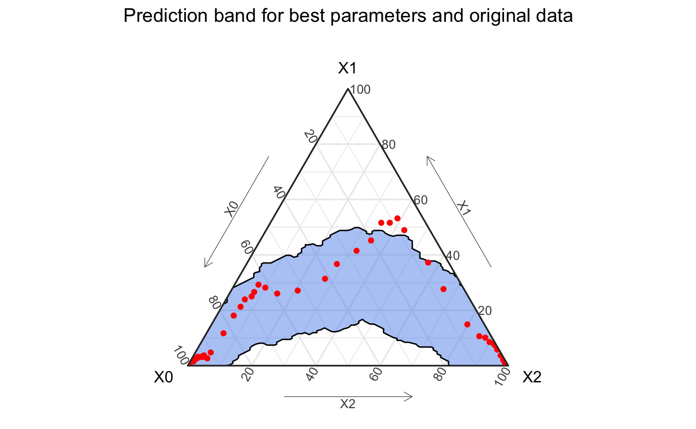
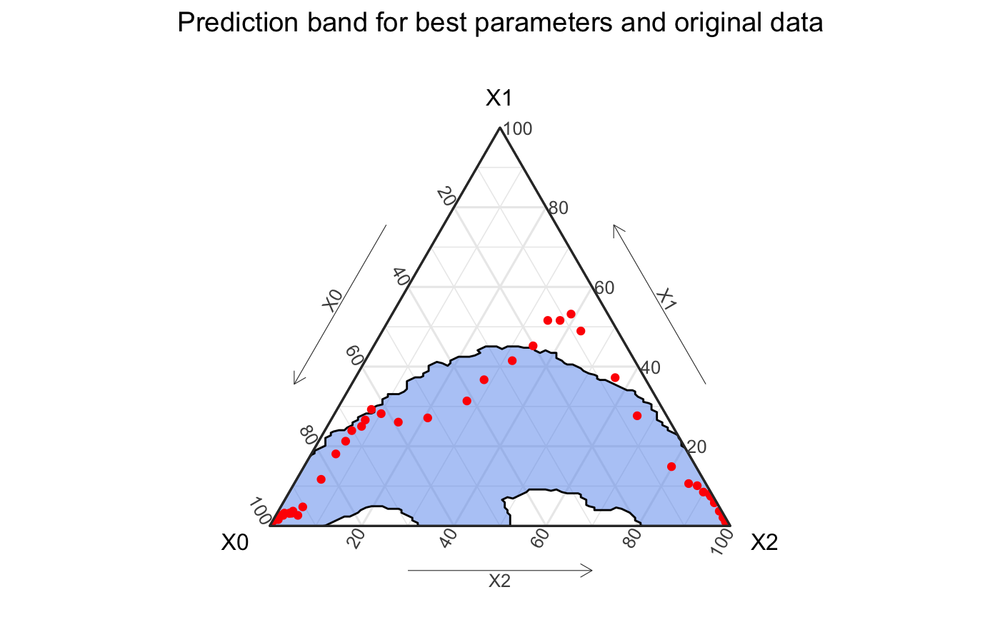

Hagelloch Measles – Fitting a Stochastic SIR Model
Source:vignettes/not-built-vignettes/hagelloch-sir-stochastic.Rmd
hagelloch-sir-stochastic.RmdOverview
In this series of vignettes, we will demonstrate epidemic analysis pipeline from EDA to dissemination using a case study of measles.

Hagelloch series vignettes
Hagelloch 1 Pre-processing and EDA
Hagelloch 2.1 Modeling and Simulation: the SIR model
Hagelloch 2.2 Modeling and Simulation: fitting a SIR model
Hagelloch 2.3.1 Modeling and Simulation: a stochastic SIR model
Hagelloch 2.3.2 Modeling and Simulation: a stochastic SIR model
Goals in this vignette
Introduce a discrete time, stochastic SIR model.
Derive the likelihood
Find parameters that maximize the likelihood for the Hagelloch data.
Simulate SIR models from the best fit model
A discrete time, stochastic SIR model
In the previous vignette, we looked at the continuous time Kermack and McKendrick SIR model. This model described how individuals moved from susceptible to infectious to recovered states, according to a series of ordinary differential equations.
We transform this continuous time, deterministic SIR model to a discrete time, stochastic one. The first step is changing the \(d\)s to \(\Delta\)s, or more formally using a first order approximation of ODEs.
\[ \frac{\Delta S(t)}{\Delta t} = \frac{S(t) - S(t-1)}{\Delta t} = - \beta S(t-1)I(t-1)\\ \frac{\Delta I(t)}{\Delta t} = \frac{I(t) - I(t-1)}{\Delta t} = \beta S(t-1)I(t-1) - \gamma I(t-1)\\ \frac{\Delta R(t)}{\Delta t} = \frac{R(t) - R(t-1)}{\Delta t} = \gamma I(t-1) \]
We will assume \(\Delta t = 1\). The next step is introducing random error to the model. Specifically, we refer to process error, which is error inherent in the transmission process, as opposed to error introduced by systemic error in measuring the data.
There are a number of ways to model the number of individuals moving from state to state from one time step to the next, but some of most common are Binomial and Poisson random variables. We analyze the process with Binomial random variables, conditioned on the previous state values. Given an initial set of values \((X_S(0), X_I(0), X_R(0)\), the number of individuals moving from one state to another from time \(t-1\) to \(t\) for \(t >0\) are given by the following equations \[ Z_{SI}(t)| X_S(t-1), X_I(t-1) \sim Binomial \left (X_S(t-1), \beta X_I(t-1) \right )\\ Z_{IR}(t)| X_I(t-1) \sim Binomial \left (X_I(t-1), \gamma \right ). \] The number of individuals moving from the susceptible state to the infectious state from time \(t-1\) to \(t\), \(Z_{SI}(t)\) is choosing from the \(X_S(t-1)\) susceptibles and with probability of \(\beta I(t-1)\) draws a number of them to become infectious. Similarly, \(Z_{IR}(t)\) chooses from the \(X_I(t-1)\) infected individuals with probability \(\gamma\) to recover. This means \(\beta I(t-1)\) and \(\gamma\) have to be constrained between zero and one, to have a properly specified distribution.
The new number in each state is then given by the following: \[ X_S(t) = X_S(t-1) - Z_{SI}\\ X_I(t) = X_I(t-1) + Z_{SI} - Z_{IR}\\ X_R(t) = X_R(t-1) + Z_{IR}. \]
One benefit of this approach, is that \(E[(X_S(t), X_I(t), X_R(t))] = (S(t), I(t), R(t))\) for all \(t\), and the variance can be calculated. More details of this are shown in Gallagher (2019).
Calculating the likelihood
We denote the set of observed data (the number of individuals in each state at time \(t\) for \(t=0, \dots, T\)) as \(\boldsymbol{x}\). We let \(p_t = \beta X_I(t)\) be the probability of becoming infected from time \(t-1\) to \(t\). The likelihood is then proportional to \[ \mathcal{L}(\beta, \gamma; \boldsymbol{x}) = \prod_{t=1}^T p_{t-1}^{S(t-1) - S(t)} \left [1-p_{t-1} \right ]^{S(t)} \times \gamma^{R(t) - R(t-1)}(1-\gamma)^{I(t-1) - (R(t)-R(t-1))}, \] where the exponents are non-random quantities, but rather completely determined by the initial values and \(\beta\) and \(\gamma\). The log likelihood is then
\[ \ell(\beta, \gamma, x) = \sum_{t=1}^T \left (S(t-1) - S(t) \right)\log(p_{t-1}) + S(t)\log\left (1-p_{t-1} \right ) + \left ({R}(t) - R(t-1) \right)\log(\gamma) + \left (I(t-1) - (R(t) - R(t-1)) \right )\log(1 - \gamma). \]
An approximation to the above log likelihood is substituting the data \(x_S(t)\), \(x_I(t)\), and \(x_R(t)\) for \(S(t), I(t)\), and \(R(t)\), respectively, which is what we do below (because it is easier to compute for demonstrative purposes).
After loading the libraries,
library(tidyerse) library(EpiCompare) library(knitr) library(kableExtra) library(RColorBrewer) library(deSolve)
we get the aggregate SIR data from hagelloch_raw and define our deterministic, continuous time SIR model.
## Getting aggregate data aggregate_hag <- hagelloch_raw %>% agents_to_aggregate(states = c(tI, tR), min_max_time = c(0, 55)) %>% rename(time = t, S = X0, I = X1, R = X2)
#' Calculate the SIR log like from above eq. #' #' @param par parameters to optimize #' @param data a data frame containing columns time, S, I, and R #' return log like for given parameters sir_loglike <- function(par, data){ data$beta <- par[1] data$gamma <- par[2] data$N <- data$S + data$I + data$R data_new <- data %>% dplyr::mutate(delta_S = c(NA, diff(S)), delta_R = c(NA, diff(R)), prev_S = dplyr::lag(S), prev_I = dplyr::lag(I), prev_R = dplyr::lag(R), prob_inf = beta / N * prev_I, loglike_SI_init = (-delta_S) * log(prob_inf) + S * log(1 - prob_inf), loglike_SI = ifelse(prev_I == 0, 0, loglike_SI_init), loglike_IR = (delta_R) * log(gamma) + (prev_I - delta_R) * log(1 - gamma), loglike = loglike_SI + loglike_IR ) %>% dplyr::filter(time != 0) return(sum(data_new$loglike)) }
init_params <- c(.1, .05) best_params <- optim(par = init_params, fn = sir_loglike, control = list(fnscale = -1), # switches from minimizing function to maximizing it data = aggregate_hag, hessian = TRUE) print(best_params$par, digits = 2)
## [1] 0.36 0.13Simulating new outbreaks
Now that we have the best (point) estimate for \(\beta\) and \(\gamma\), we can simulate new data.
set.seed(2020) ## This is the SIR representation trans_mat <- matrix(c("X0 * (1 - X1 * par1 / N)", "X0 * X1 * par1 / N", "0", "0", "X1 * (1 - par2)", "par2 * X1", "0", "0", "X2"), byrow = TRUE, nrow = 3) rownames(trans_mat) <- c("S", "I", "R") init_vals <- c(187, 1, 0) par_vals <- c(par1 = best_params$par[1], par2 = best_params$par[2]) max_T <- 55 n_sims <- 100 abm <- simulate_agents(trans_mat, init_vals, par_vals, max_T, n_sims, verbose = FALSE) agg_model <- abm %>% group_by(sim) %>% agents_to_aggregate(states = c(I, R))
ggplot() + geom_prediction_band(data = agg_model %>% filter(t != 0), aes(x = X0, y = X1, z = X2, sim_group = sim), alpha = .5, conf_level = .9, fill = "cornflowerblue") + coord_tern() + theme_sir() + geom_point(data = aggregate_hag, aes(x = S, y = I, z =R), col = "red") + labs(title = "Prediction band for best parameters and original data")
## Coordinate system already present. Adding new coordinate system, which will replace the existing one.## Warning: Ignoring unknown aesthetics: z## Due to dist_params$dist_approach = "equa_dist", this may take a little while - see `filament_compression` examples for a work-around if you're making this plot multiple times
The result of this is a prediction band that does not fit the data well.
However, the above prediction band only contains the simulations resulting from the point estimates of \(\beta\) and \(\gamma\).
We will repeat this process by first simulating \[ (\beta, \gamma)^{sim} \sim MVN\left ((\hat{\beta}, \hat{\gamma}), \hat{\boldsymbol{\Sigma}}\right ) \] where \((\hat{\beta}, \hat{\gamma})\) is the MLE and \(\hat{\boldsymbol{\sigma}}\) is the variance-covariance (estimated from the Fisher Information approximation from the optimization process)
library(MASS)
##
## Attaching package: 'MASS'## The following object is masked from 'package:dplyr':
##
## selectsigma <- solve(-best_params$hessian) mu <- best_params$par B <- 100 sim_list <- vector(mode = "list", length = B) par_val_mat <- mvrnorm(n = B, mu = mu, Sigma = sigma) for(bb in 1:B){ par_vals <- c("par1" = par_val_mat[bb, 1], "par2" = par_val_mat[bb, 2]) abm <- simulate_agents(trans_mat = trans_mat, init_vals = init_vals, par_vals = par_vals, max_T, n_sims = 2, verbose = FALSE) agg_model <- abm %>% agents_to_aggregate(states = c(I, R)) agg_model$sim <- bb agg_model$beta <- par_vals[1] agg_model$gamma <- par_vals[2] sim_list[[bb]] <- agg_model } sim_df <- dplyr::bind_rows(sim_list)
plot_df <- sim_df %>% dplyr::filter(t != 0) %>% dplyr::select(sim, t, X0, X1, X2) #bad_cat <- names(table(plot_df$sim)[table(plot_df$sim) < 55]) ggplot() + geom_prediction_band(data = plot_df, aes(x = X0, y = X1, z = X2, sim_group = as.numeric(sim)), alpha = .5, conf_level = .9, fill = "cornflowerblue", pb_type = "delta_ball") + coord_tern() + theme_sir() + geom_point(data = aggregate_hag, aes(x = S, y = I, z =R), col = "red") + labs(title = "Prediction band for best parameters and original data")
## Coordinate system already present. Adding new coordinate system, which will replace the existing one.## Warning: Ignoring unknown aesthetics: z## Due to dist_params$dist_approach = "equa_dist", this may take a little while - see `filament_compression` examples for a work-around if you're making this plot multiple times
References
Gallagher, Shannon K. 2019. “Catalyst: Agents of Change. Integration of Compartment and Agent-Based Models for Use in Infectious Disease Methodology.” PhD thesis, Carnegie Mellon University. https://skgallagher.github.io/papers/gallagher_dissertation.pdf.